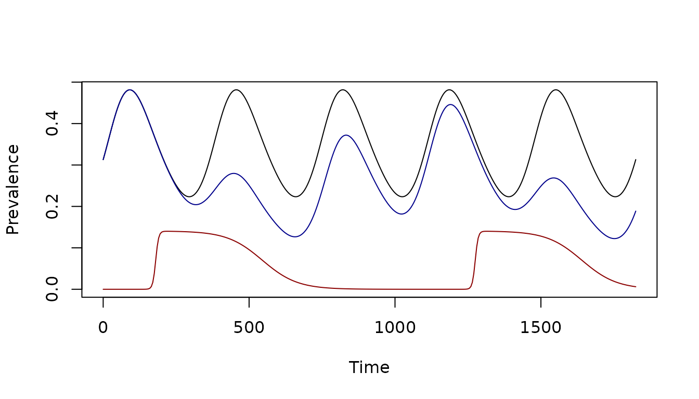

Bed Net Mass Distribution Events
Simulating Multiple Bed Net Distribution Rounds
Source:vignettes/BedNet_Events.Rmd
BedNet_Events.Rmdramp.control has utilities to set up
and simulate mulitple rounds of mass bednet distributions. In the
following, we demonstrate how, and then we discuss the
implementation.
Basic Setup
The first step is basic setup. Before setting up a bednet model, it’s
a good idea to check that module is capable of handling it. To support
bednets, the module must support exogenous forcing on the
bionomic parameters. For example, we can check whether the
macdonald supports
skill_set_MY("macdonald")$effect_sizes## NULLBasic Setup
The first step is basic setup. Before setting up MDA, it’s a good
idea to check that module is capable of handling mass treatment. To see
if a module supports it, look at the skill set. For example, we can
check whether the SIS supports MDA or MSAT.
skill_set_XH("SIS")$mda## [1] TRUEThe SIS module supports MDA.
The next step is basic setup:
base_model <- xds_setup(Xname = "SIS", MYname = "SI", Loptions = list(Lambda=30, season_par = makepar_F_sin(bottom = 0.2, pw=2)))Next we solve it.
base_model <- burnin(base_model)
base_model <- xds_solve(base_model, 5*365,5)
xds_plot_PR(base_model)
itn_model <- setup_bednets(base_model, effect_sizes_name = "lemenach")
bednet_jdates <- c(180, 1275)
bednet_type <- rep("pbo", 2)
peak_access <- rep(0.7, 2)
contact <- c(0.2, 0.2)
itn_model <- setup_bednet_events(itn_model, bednet_jdates, bednet_type, peak_access, contact)
tt = seq(0, 5*365, 5)
show_bednet_coverage(tt, itn_model)In this model, where the two bed net rounds overlap, total coverage at the start of the second round is higher because some people still own nets from the first round.
show_bednet_contact(tt, itn_model)
itn_model <- xds_solve(itn_model, times=tt)
xds_plot_PR(base_model)
xds_plot_PR(itn_model, add=T, clr="darkblue")
show_bednet_contact(tt, itn_model, add=T, clr="darkred")